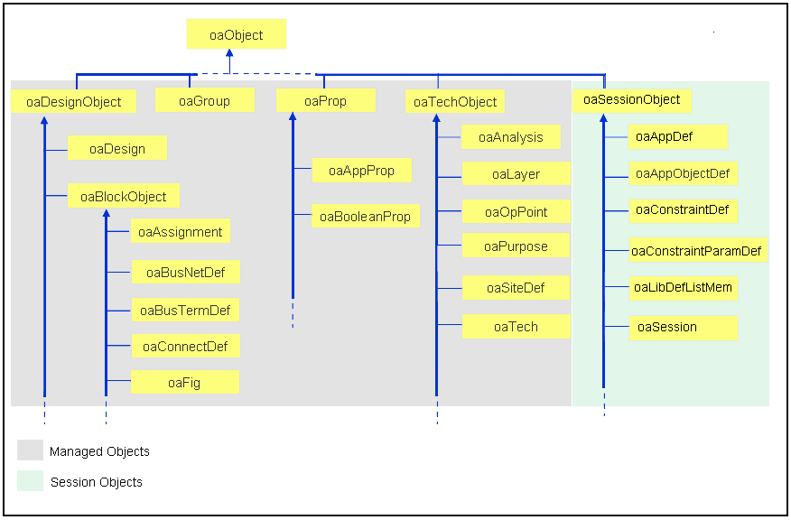

|
 |
 |
||||||
|
|
|
||||||
The classes, functions, and symbols that comprise the OpenAccess API are defined in a C++ namespace, and applications using the API must refer to that namespace. The common method for doing this is to start with a using declaration that refers to the oa namespace:
using namespace oa
Alternatively, each OpenAccess name can be prefixed:
oa::oaString mystring("hello");
Each application source file must apply one of these techniques. The OpenAccess header files do not specify using oa namespace.
Note: The oa namespace is actually an alias for a version-specific namespace, such as OpenAccess_4::. Application code should use this namespace directly only in the very unusual case in which an application refers to multiple versions of the OpenAccess implementation.
There are three basic categories of C++ classes in the OpenAccess API:
Managed classes represent data that is persistently stored in OpenAccess databases.
The oaObject class is the abstract base class for all objects managed by OpenAccess. Applications do not need to allocate storage for managed objects -- this is handled by OpenAccess. Managed objects are created and destroyed using create and destroy functions, not constructors and destructors. The create function for a managed object returns a pointer to the new object, and callers can use that pointer to query, modify, or destroy the object.
You use the OpenAccess API to traverse to managed classes from their database object, which can be an oaDesign, oaTech, oaLib, or oaWafer.
All managed classes in the database are derived from the oaObject class. Most classes that
represent objects in designs are also derived from the oaDesignObject class, and most classes in a technology database derive from oaTechObject. You cannot inherit from OpenAccess managed objects. Instead, you can use oaAppDefs or extensions to extend the persistent attributes. See Extending the Database for more information.

Note that objects that derive from oaSession are session objects, which explained later in this document.
Objects that can be created in multiple types of database inherit from oaObject, but not from a specific database class. For example, properties, groups, and constraints can reside in design databases and technology databases, so they do not derive from oaDesignObject.
Managed objects have the following attributes:
Some examples of managed classes are instances, nets, terminals, pins, layers, figures and shapes, vias, routes, and properties.
The underlying data structures and storage for managed classes are entirely the responsibility of the database. In most cases, there are APIs specifically for creating and deleting these classes of objects.
You can use the API to traverse managed objects in OpenAccess databases.
The following examples show how to work with managed objects.
Creating a net:
oaNet *mynet=oaNet::create(myBlock, name);
Destroying an object:
mynet->destroy();
Traversing to a unique object (only one exists) from another object:
oaNet *net; net = terminal->getNet();
Using a find function, such as finding a net by name:
oaName netNm("ldMem0", oaVerilogNS);
oaNet *IdNet = oaNet::find(block, netNm)
Getting a pointer to a related object:
oaNet *net = myRoute->getNet();
Getting the database for an object:
oaDesign *dsgn = (oaDesign*) myInst->getDatabase();
You use a get call to retrieve a single attribute of an object associated with a class. Simple attributes, such as enum values, are the return values of the get function.
For example, to get the signal type of a net:
oaSigType sigType = net->getSigType();
More complex attributes are returned in utility classes. To get these, the caller passes in an instance of the utility class by reference. For example, to get a net name:
oaName name;
mynet->getName(name);
Collections are used to retrieve objects in a database when there is more than one object in relationship to the starting object. For example, you can use a collection to get all the nets in a block or all the pins on a terminal.
To step through the objects in a collection, the application constructs an iterator from the collection. The code uses the iterator by calling its getNext function in a for or while loop. The getNext function returns a pointer to each object in the collection. When the iterator is done, it returns a NULL value. At that time, the calling code can destroy the iterator or reset it to iterate over the objects again.
When an iterator is active, it is safe to delete objects that have already been returned by that iterator (including the most recent getNext() call). This does not cause the iterator to return invalid objects or to skip other objects.
It is not safe to delete an object in the collection that has not yet been returned by the iterator. This invalidates the iterator and can cause problematic results, such returning invalid objects, throwing exceptions, and skipping members of the collection.
Further, adding objects to a collection while iterating over the collection is not recommended because subsequent getNext() results are undefined.
The order in which objects are returned by oaIter::getNext() is not guaranteed to be the same:
Example
oaIter<oaNet> netIter(block->getNets());
oaNet *aNet;
while (aNet = netIter.getNext() ) {
// Do something with aNet
}
The API also uses arrays to access multiple objects from the database. See Array Classes for more information.
OpenAccess uses static member functions to reduce the number of functions of container classes such as oaBlock and oaDesign. Consider the following OpenAccess code, which uses static member functions:
oaInst* myInst = oaInst::find( myBlock, name ); oaRect* myRect = oaRect::create( myBlock, layer5, purpose1, bbox );
If a different approach had been used, the oaBlock class would contain APIs such as oaBlock::findInst and oaBlock::createRect (and many more). Also, making the functions static places them in the documentation with the class that they return.
Some managed database classes are automatic classes. Instances of automatic
classes are created as a consequence of the creation of other classes. For
example, oaInstHeader
objects are automatically created when you
create oaInst objects.
You cannot explicitly create or delete automatic classes.
For some named objects, the database will automatically generate a name if one is not specified when the object is created. The following objects fit into this category.
Block Domain |
Module Domain |
Occurrence Domain |
|---|---|---|
oaArrayInst |
oaModScalarInst |
oaOccScalarInst |
oaScalarInst |
oaModModuleScalarInst |
oaOccModuleScalarInst |
oaScalarNet |
oaModScalarNet |
oaOccScalarNet |
oaPin |
||
oaBoundary |
||
oaRow |
||
oaFigGroup |
Nets, instances, and pins always have unique names. If you do not supply a name when you create one of these objects, the database assigns an instance name such as I_001. Relying on automatic naming of these objects is more efficient because it conserves memory.
Automatic naming only applies to scalar objects. Buses must always be assigned a name, but they can be sparse (contain missing bits). Vector instances cannot be sparse because they are single objects, and there is no way to declare a vector instance with missing bits.
Session objects are built and managed by OpenAccess and have many of the characteristics of managed objects, but are not persistent and are not part of any particular database. oaAppDefs, oaConstraintDefs, and oaViewTypes are session objects. These objects must be used consistently across all databases. OpenAccess creates them in the oaSession where it enforces the proper uniqueness by preventing inconsistent objects from being created.
Uniqueness can be an issue for oaAppDefs, oaConstraintDefs, and oaConstraintParamDefs, where the session object has some attributes that define it and other attributes that must be used consistently for that definition.
For example, an oaAppDef is determined by its name and the class of object to which it applies. For a given name and class pair, all the other attributes - persistence, type of value, and default value - must have a consistent setting. For example, if an IntAppDef named “myData” exists on oaNets, trying to get a FloatAppDef named “myData” on oaNets throws an exception. However it is still legal to get a BooleanAppDef named “myData” on oaInsts.
One of these session objects exists in a given session either because data of that type exists in a database that is currently open, or because the application performed a get() for it. Once one of these objects exists in a given session, any attempt to create an inconsistent session object with the same definition is an error. If a database containing an oaAppDef that is inconsistent with a previously existing oaAddDef is opened, the newly read oaAppDef and its associated extension data are ignored and are not available to the application.
If an application tries to get a session object after a database containing an inconsistent definition of that session object has been read in, the get() function throws an exception. The application is not able to use that definition. To avoid issues like this, applications should get() session objects with the definition that the application expects before reading in any databases.
Better yet, session objects should always be used consistently so these issues never arise.
The caller must ask OpenAccess for the object. Note that the get method below is a synonym for find or create.
oaIntAppDef*intExt = oaIntAppDef ::get("myint", 0, true);
Session objects are never destroyed.
A utility class instance is always constructed and destroyed by the application. The calling code completely controls the lifetime of instances of these classes. When data represented by a utility class is to be retrieved from the database, the caller will construct an empty utility object and pass it by reference to a member function of the managed class for the database to fill in.
Callers can use utility classes to help access managed classes. Utility classes include oaString, oaName, oaObserver, oaPointArray, and oaTransform.
Occasionally, callers will derive their own classes from the utility classes
defined in the API. For example, a caller can derive a class from the
oaString class that
implements a different storage methodology than that used by the native
oaString class.
Examples
Utility objects are constructed and destroyed by the caller:
oaString title("OA API Guide");
oaPointArray pts(20);
oaTransform *trans = new oaTransform(20,10);
delete trans;
To get a complex piece of information from a utility class, functions that pass utility arguments by reference are used, such as in the oaName::get call in this example.
oaString str; iname.get(oaVerilogNS, str); cout << str << endl;
Note: There is a minor exception to this. Functions to get compiled-in strings return a reference to the string as a function value.
oaString nameOut = myDesign->getCellType().getName();
Most of the utility classes have a copy constructor:
oaPoint firstPoint(ptArray[0]);
Some utility classes provide a special function that returns a reference to be used for setting values, as in the final assignment in this example:
oaBox bbx(10, 10, 40, 40); oaInt4 side1 = bbx.left(); bbx.left() = 20;
For more information about special utility classes, see Strings and Array Classes.
The oaString
class helps callers create, manipulate, and pass strings into and out of the
database.
The oaString class
contains many generally useful string functions. This class can be used
independently of the database and is useful for many applications, even
those that are not database applications.
Strings are almost always passed into the database and returned from the database by reference.
Example
oaString pinName("Pin");
oaPin *pin = oaPin::create(term, rectangle, pinName, oacLeft);
oaString str;
pin->getName(str);
As long as the str object is in scope, it will contain the name of the pin. The value of str is not
updated if the name of the pin changes.
Always having the application construct a string that it passes into OpenAccess helps to ensure the safety of the OpenAccess memory layout because applications never get pointers to strings in the database's memory. OpenAccess uses this technique even though these calls cannot be made inline as arguments to other functions, such as printf.
oaString str; marker->getMsg(str); cout << "Message = " << str << endl;
Arrays are derived from the template class oaArray<T>. You can create your own instances of the oaArray class template.
Some of the utility objects defined in the API are arrays. A common array class is the oaPointArray class, which is used to pass a series of geometric locations to and from the API. As are all utility objects, the oaPointArray class is constructed by the caller and is handed by reference to the functions in the API that utilize point arrays.
Utility arrays and oaString objects are reallocated as needed. If the caller performs operations on the arrays that causes them to grow, they will be automatically reallocated. If this occurs frequently, performance can be an issue. To prevent performance issues, avoid constructing arrays in inner loops and avoid letting append increment the allocation.
There are constructors to oaPointArray (and other arrays) that let you set the allocated size when you construct the array. When using a point array in a way that allows it to grow during use, you should initially construct the array with its largest anticipated size. The size of the point array can be larger than the number of points actually stored. This is useful when the oaPointArray is used as a buffer because it reduces the need to reallocate the array.
Just as with built-in C++ arrays, it is easy to access unallocated or uninitialized elements though this is always inappropriate.
Example
oaPointArray sqWave(10); // Largest anticipated size
sqWave.append(oaPoint(0,0)); // Starting point
sqWave.append(oaPoint(0,50)); // Add remaining points
sqWave.append(oaPoint(50,50));
sqWave.append(oaPoint(50,0));
sqWave.append(oaPoint(100,0));
sqWave.append(oaPoint(100,50));
sqWave.setNumElements(6); // Specify the number of elements
oaPath *waveShape = oaPath.create(blk, DrawLyr, LabelPurp, 1,
sqWave, oacTruncatePathStyle)
Use square brackets [ ] to access array elements:
oaPoint side1 = ptArray[iPt]; ptArray[++iPt] = oaPoint(20,30);
Where there is an n-to-1 relationship in the data model, an API can handle this as a collection or as an array that is passed back and forth to the application. The OpenAccess API uses arrays and collections according to the following guidelines:
For example, OpenAccess uses an oaCollection to get all the members of a group, which can be quite large. In contrast, an oaPointArray is used to get all the points defining a polygon.
The OpenAccess API uses a number of enums to pass various settings between the calling code and the database. For example, oaOrientEnum lists the possible rotation and mirroring transforms that can be applied to a figure, and oaPathStyleEnum lists the possible end types for an oaPath.
OpenAccess declares a wrapper class for each of these enums. This wrapper implements extra functions for each enum, which provides additional flexibility and allows the functions that reference the enums to be more type-specific. The functions in the API that reference enums are declared using the enum wrapper class.For example, the function oaRoute::setRouteStatus has the declaration:
void setRouteStatus (const oaRouteStatus &routeStatus);
oaRouteStatus is a wrapper class for oaRouteStatusEnum.
The setRouteStatus function can be called using any of the
following equivalent calls:
myroute->setRouteStatus(oacFixedRouteStatus);
myroute->setRouteStatus(oaRouteStatus(oacFixedRouteStatus));
myroute->setRouteStatus((oaRouteStatus)oacFixedRouteStatus);
All of these calls compile into the same efficient code. The enum value method is preferred because it is the simplest.
The wrapper class provides the ability to return a string that represents the enum value at execution time. This function can be used to report on the value.
oaString stat(myroute->getRouteStatus.getName()); cout << "Route status is " << stat << endl;
The wrapper classes also allow the caller to construct an instance of the enum value from a string. This is much less efficient than using the symbolic enum value, but is useful in applications such as an interpreted scripting language.
myroute->setStatus(oaRouteStatus("locked"));
Enum values are included in the class reference material for each wrapper
class. For example, the
oaScanChainSetType class includes
the following enum information.
enum oaScanChainSetTypeEnum
| Enumeration values: | |
| oacOrderedSetType | "orderedSet" |
| oacUnorderedSetType | "unorderedSet" |
The first column shows the enum symbol that is used by
the C++ compiler. The quoted string is the value that can be returned using
oaEnumClass::getName() or that can be used to construct an instance of the
wrapper using oaEnumClass::("string value").
Coordinates in OpenAccess are 32-bit signed integers, and you can use the full range of these signed integers.
OpenAccess uses typedefs for function arguments that are coordinates, distances, or offsets in order to indicate the usage of the arguments:
All coordinates are integers in database units. There is a mapping from database units into the standard distance called user units. This mapping is stored in a technology database. The technology database will specify the number of database units that represent a single user unit, and it will have an enum value that represents the user unit. Common settings for mask layout views are 1000 database units per user unit with the user units as Microns.
For more information, see oaTech::setDBUPerUU.
The following topics are covered in this section:
The OpenAccess API uses class templates. Most class templates can only be applied to specific OpenAccess classes.
You can specify the class that the template is applied to when you declare a variable that uses the template:
oaFloatAppDef<oaNet> *weight;
The oaObserver class is an abstract base class for all types of observers in OpenAccess. Observers notify the client of changes to a particular class of objects. For example, the oaShape observer notifies the client if a shape is created, modified, or destroyed.
Refer to OpenAccess Observers to see a table of the managed classes that support observers.
For an example of a template that implements observers, refer to Observer Template Code Example.
Some classes are abstract classes from which the application must create derived classes to redefine the virtual functions. Examples are oaObserver and oaRegionQuery.
Note that you cannot derive from a managed class. There is no way to call the parent's constructor to make the object.
Return to Programmers Guide topics

Copyright © 2001-2010 Cadence Design Systems, Inc.
All rights reserved.